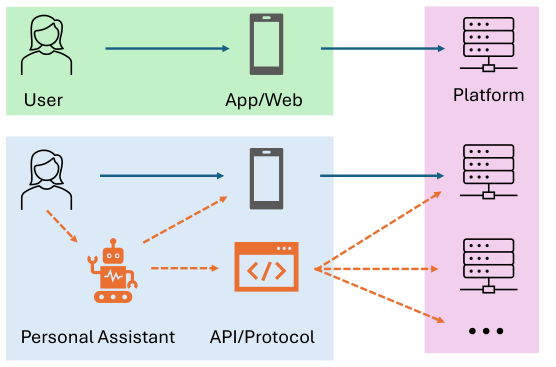

A Position Paper on Recommender Systems in the Era of Autonomous Agents (自主智能体时代的推荐系统立场论文)
- 会议/期刊: ACM RecSys 2026 (Main Track, Position Paper)
- 作者与机构: Aixin Sun (南洋理工大学 NTU)
- 推荐链路定位: 端到端（系统级范式重构，覆盖召回/排序/评估全链路）
- 研究方向: 对话推荐与智能体仿真 / 大语言模型推荐
- 论文原文: https://arxiv.org/abs/2607.24822v1
- 开源代码: 暂未开源
TL;DR (1分钟核心速览)
本文是一篇立场论文，指出推荐系统的"消费者"正从纯人类变为"人类 + 授权智能体"的混合体。作者将智能体定义为用户侧、独立于平台的个人助理（区别于平台内置的 agentic RecSys），形式化了人-智能体-平台的三方交互与各自冲突的目标函数，并批判性回顾了人本推荐在"无系统思维、静态数据、数据集-任务错配、评估效度危机"四方面的历史盲点，进而提出从"偏好建模"转向"任务执行"、从离线指标转向协议级交互评估、从单平台检索转向跨平台代理、从任务委托转向偏好诱导四大研究方向。本文无实验，属概念框架型 position paper。
Background & Motivation (背景与核心矛盾)
- 主流范式: 数十年来 RecSys 默认终端用户是人类，通过 GUI 直接与单一平台交互，优化点击/转化/时长等代理指标。
- 范式转移: ChatGPT Agent Mode、Claude Cowork 等个人助理已可代表用户执行"目标驱动"的采购任务，且能通过 GUI 或 API 同时查询、比较、聚合多个平台的推荐结果（图1 下半部分）。
- 前人局限一（视角错位）: 现有 "agentic RecSys" 文献把 LLM Agent 部署在平台内部增强推荐；本文关注的是客户端、仅代表用户利益的独立代理，二者目的根本不同、互补而非竞争。
- 前人局限二（历史盲点）: 作者批判人本推荐四大积弊——(i) 把推荐当纯 ML 矩阵补全而非 socio-technical 系统，复杂神经模型常打不过调好的启发式基线；(ii) 依赖 MovieLens/Amazon 等静态过时快照，形成"刷榜幻觉"；(iii) 数据集-任务错配（用点击流评估交易型任务，且数据只记录 what 不记录 why，即隐目标 \(g_t\)）；(iv) 评估效度危机，Recall@K/NDCG 与线上 A/B 弱相关甚至负相关，且普遍存在时间穿越泄漏。
- 核心洞察 (Key Insight): 智能体作为跨平台历史聚合器，比任何单一平台都更了解用户全局状态；平台只看到自己那一片"切片"，信息优势发生反转。
- 本文切入点: 用带显式目标 \(g_t\) 的任务定义替换隐式行为推断，重构三方博弈下的优化逻辑与评估协议。
Method (核心方法设计)
1. 整体框架 (Overall Architecture)
本文不提出模型，而是提出问题形式化框架。核心是把传统推荐任务（式1）升级为含智能体的交易型推荐任务（式2），并叠加智能体侧跨平台聚合（式3）。整体逻辑：人类给出（可能模糊的）潜在效用 → 智能体将其转译为程序化约束目标 \(g_t\) → 各平台基于自身切片返回候选 → 智能体跨平台聚合、校验约束、重排 → 执行交易。三方目标函数天然冲突：人类最大化潜在效用、智能体优化效用的程序化代理、平台最大化转化与营收。
flowchart TD
A["人类用户 u：潜在效用（常表述不全）"] --> B["授权智能体 a_u：转译为程序化目标 g_t"]
B --> C["平台 p_x / p_y / p_z：各自切片返回候选 R_p,t"]
C --> D["智能体跨平台聚合 f_au + 约束校验"]
D --> E["统一排序 R~_t 并执行交易"]
2. 关键设计拆解 (Key Designs)
-
含智能体的交易型推荐任务定义（式2）：传统式1 \(\langle u,t,(U\times I)_{\le t},s(I_{\le t})\rangle\to R_{u,t}\) 无法表达"谁在请求"与"显式目标"。本文引入请求实体 \(e\in\{u,a_u\}\) 与目标 \(g_t\)，并让系统利用用户与智能体的联合历史 \(((U\cup A)\times I)_{\le t}\)： $\(\langle e,t,g_t,((U\cup A)\times I)_{\le t},s(I_{\le t},g_t)\rangle\to R_{e,t}\)$ 直觉：当 \(e=a_u\) 时 \(g_t\) 是程序化约束（如"续航≥16h 且价格<$1000"），平台输出须从"视觉说服型版式"转为"高密度、可验证的数据结构"。
-
跨平台代理聚合（式3）：单平台只有碎片化视图，智能体可聚合多平台候选： $\(\tilde{R}_t=f_{a_u}\big(\{R_{p,t}\}_{p\in\mathcal{P}},\,g_t,\,h^{\text{cross}}_t\big)\)$ 其中 \(h^{\text{cross}}_t\) 是仅客户端可见的跨平台行为证据。这是全新研究面：如何检测并纠正平台侧偏差、如何为 \(h^{\text{cross}}_t\) 加权、如何设计抗博弈的机器可读协议。
-
三方交互前沿（Tripartite Dynamics）：Human-to-Platform 仍是传统优化域（利用认知偏差、视觉层级、人为稀缺）；Agent-to-Platform 中视觉说服失效，平台会试图从 \(g_t\) 反推用户全局状态以夺回信息优势，并存在针对智能体校验的元数据操纵风险；Human-to-Agent 是全新域，核心是目标错配——用户给出模糊 \(g_t\) 时智能体会过度优化代理指标（如只买最便宜的"高评分"机器），忽略未言明的审美/重量/品牌偏好。
Experimental Setup & Evaluation Protocol (实验设置与评估协议)
- 本文性质: Position paper，无数据集、无实验、无基线对比。其"评估协议"贡献在于批判与倡议，而非实证。
- 对现有评估的批判: 指出 Recall@K/NDCG 在静态历史日志上与线上 A/B 及真实满意度弱/负相关；忽略时间戳 \(t\) 导致数据泄漏；模拟对话数据集（众包角色扮演、算法用户模拟器）假设"完全理性、偏好静态、表达清晰"的用户，与真实用户（改主意、反馈模糊、中途放弃）严重脱节。
- 倡议的新评估范式: (i) 以约束可满足性 \(s(I_{\le t},g_t)\) 与端到端任务完成度替代 item-level 预测精度；(ii) 支持多轮迭代查询；(iii) 能检测对抗性元数据操纵；(iv) 构建"带 ground-truth 效用函数的智能体向模拟平台发结构化查询"的 benchmark 环境，须包含部分规格、任务中途约束修订、跨平台套利等真实 agentic 行为。
Key Experimental Results (实验关键数据)
1. 主实验对比 (Main Results)
本文为立场论文，不含任何主实验表格与数值结果，故无 SOTA 对比可列。其"证据"为对既有文献的定性引用与逻辑论证（如引用"复杂神经架构常不敌调优的传统/启发式基线"、"离线指标与线上弱相关"等既有结论）。
2. 消融实验 (Ablation Study)
不适用（无模型、无组件可消融）。
3. 关键实验发现 (Key Findings)
作为 position paper，其"发现"为概念性论断，归纳三条： 1. 信息优势反转：智能体聚合跨平台历史 \(h^{\text{cross}}_t\) 后，比任何单平台更懂用户，平台被迫从 \(g_t\) 反推用户状态，重塑了平台-用户权力结构。 2. 任务类型决定可委托性：内容型推荐（娱乐/资讯消费）本质是人类体验、不可委托，仍将直接服务人类；交易型推荐（价值在结果而非过程）才适合委托给智能体——这是全文讨论的边界条件。 3. 历史盲点会被继承：若把"刷静态榜、指标错配、模拟理想用户"的旧习惯带入 agentic 时代，将放大而非解决评估效度危机；故须以"显式、可验证、基于约束的任务执行"为共同主线重构。
Highlights, Limitations & Rating (亮点、对比与审稿评价)
- 与代表作对比 (vs. Prior Work): 与主流 "agentic RecSys"（LLM Agent 内嵌平台做推荐，如平台侧 Agent 增强）本质区别在于代理归属与利益立场——本文智能体在客户端、仅代表用户、可跨平台套利；与 Conversational RecSys 的区别在于目标不是"推荐一个物品"，而是"把采购任务规格化到任何合格智能体都能正确执行"。
- 可迁移亮点: (i) 用"请求实体 \(e\) + 显式目标 \(g_t\) + 联合历史"三元组改造任务定义，可直接用于设计 agent-native 推荐 API 的输入契约；(ii) "约束可满足性 + 端到端任务完成度"的评估思路，可迁移到任何需要可验证输出的推荐场景（如比价、行程规划）。
- 审稿级局限批判: (i) 全文无实证、无原型、无 benchmark 落地，四大方向均停留在"提出好问题"层面，可操作性弱；(ii) 强假设"每用户至多授权一个跨全平台智能体"，且将内容型/交易型的二分边界处理得较粗，现实中大量混合意图场景（如种草后购买）难以归类；(iii) 隐私、同意与跨平台数据治理被作者明确"超出范围"，但这恰是该生态能否成立的前提，回避了最硬的约束。
- 四维评分: 创新性 ⭐⭐⭐⭐ | 实验扎实度 ⭐⭐ | 方法清晰度 ⭐⭐⭐⭐ | 落地价值 ⭐⭐⭐⭐